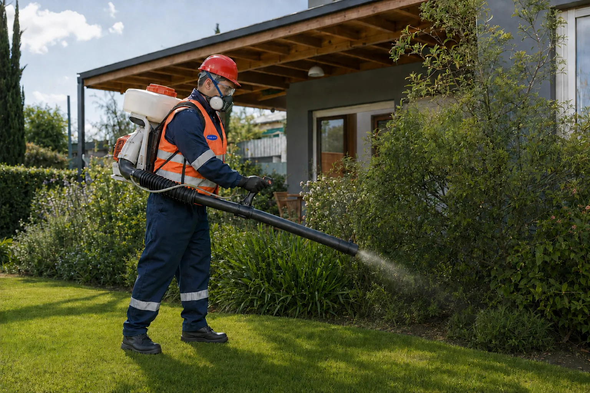

Control de plagas y fumigaciones profesionales en Salta.
Identificamos el problema, recomendamos medidas preventivas y definimos el tratamiento adecuado para viviendas, locales, jardines y pequeños establecimientos.

Una solución clara para cada caso.
La consulta puede empezar por la plaga que viste, las señales que encontraste o el tipo de establecimiento.
Cucarachas
Identificación de focos, refugios y condiciones que sostienen la actividad.
Mosquitos
Reducción de criaderos, prevención y control según el entorno.
Alacranes
Medidas de prevención, orden y reducción de condiciones favorables.
Hormigas y otros insectos
Diagnóstico y tratamiento adaptado a la especie y ubicación.
Locales y habilitaciones
Servicios y documentación para establecimientos según sus requerimientos higiénicos.

También podés visitarnos en nuestro local.
Atención y asesoramiento en Gral. Güemes 1340, Salta. Nuestro equipo puede orientarte sobre el problema y la solución más adecuada.